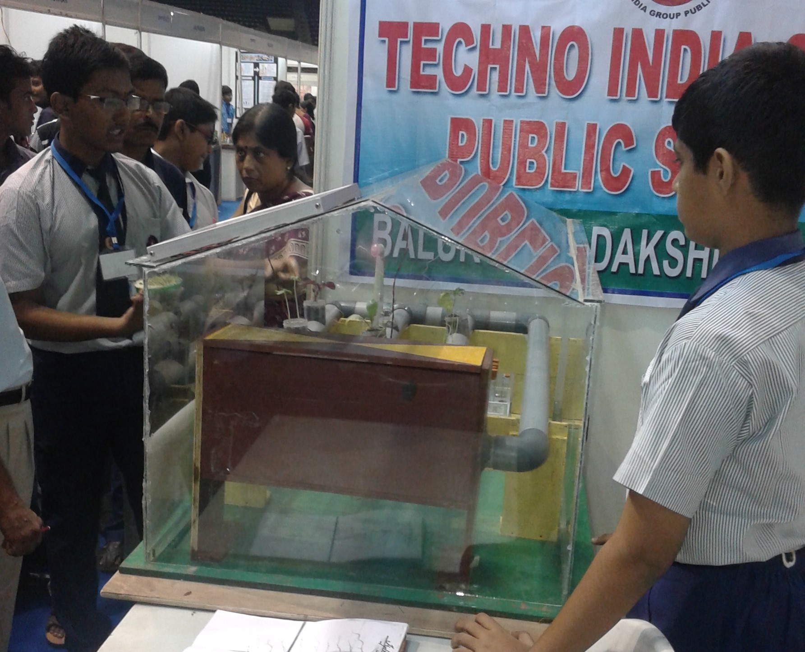
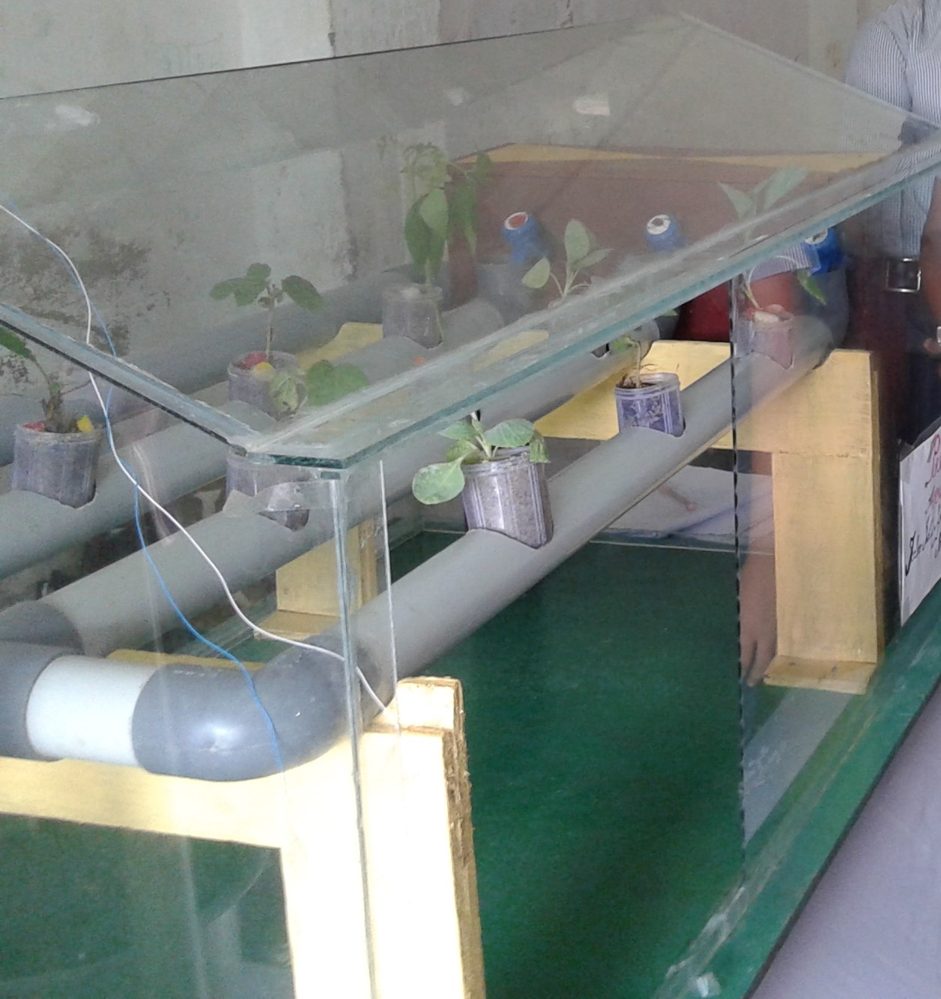

Hydroponics
Project Overview
The main goal of this project was to develop a system of cultivation where use of soil could be reduced or completely removed.
We made a glasshouse and succeeded in growing different small plants including citrus fruits, strawberries without soil.
These was done as a very small scale prototype as an energy efficient cheap alternative to farming on huge tracts of land.
We discussed problems with local farmers and agriculture officers and tried to come up with possible solutions.
The greatest problem of cultivation in modern day is that it takes up huge parts of land and can be easily destroyed by a day of bad weather.
Putting them in a glass house and vertically stacking all plants up is a solution. The house can be powered by solar panels over it.
This is the future of farming and is already implemented in some parts of Bangladesh where plants are grown on water on a floating compost material.
Go Back

Place- Balurghat
Time of Work
This was a few month long project and involved participating in 3 separate events.
It was done between start of 2014 and start of 2015.
Go Back
The 3 events included district, state and national level competition.
The major time consuming part was solving the problems and making a working model.
Meeting people working in the field directly helped a lot in getting insights and was a good experience.

Major Challenge:Working Model
Resources Used and Skills Learnt
There was no online resources used.
Go Back
Every information collected was by communicating with people working in the field.
Significant knowledge in the field of agriculture and situation of our country in the field was understood by us.